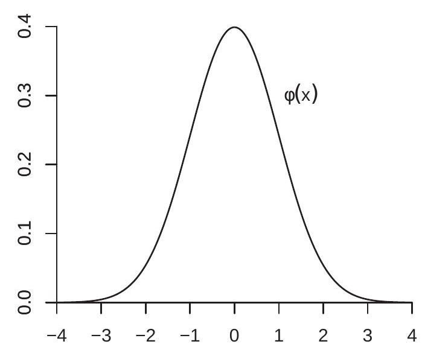
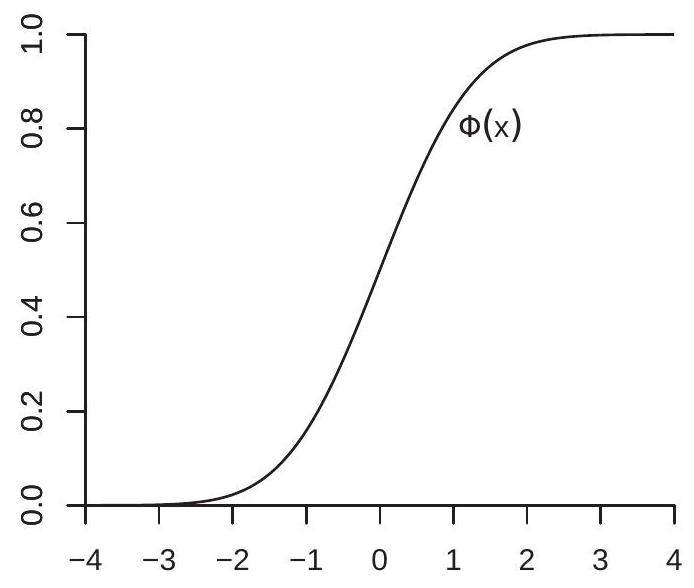
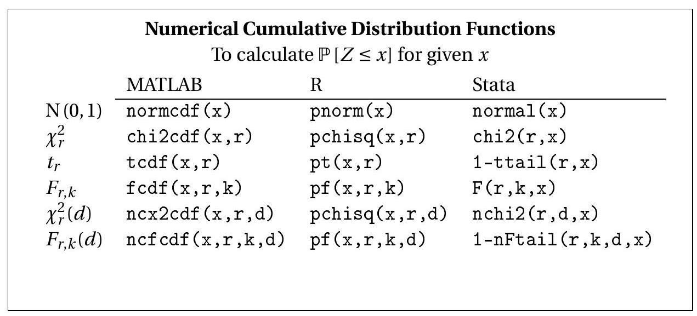
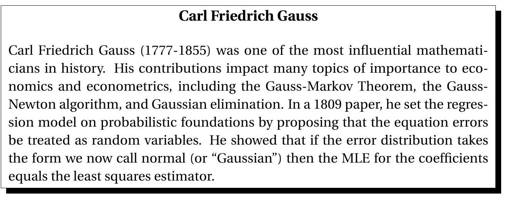

5 Normal Regression
5.1 Introduction
This chapter introduces the normal regression model, which is a special case of the linear regression model. It is important as normality allows precise distributional characterizations and sharp inferences. It also provides a baseline for comparison with alternative inference methods, such as asymptotic approximations and the bootstrap.
The normal regression model is a fully parametric setting where maximum likelihood estimation is appropriate. Therefore in this chapter we introduce likelihood methods. The method of maximum likelihood is a powerful statistical method for parametric models (such as the normal regression model) and is widely used in econometric practice.
We start the chapter with a review of the definition and properties of the normal distribution. For detail and mathematical proofs see Chapter 5 of Probability and Statistics for Economists.
5.2 The Normal Distribution
We say that a random variable \(Z\) has the standard normal distribution, or Gaussian, written \(Z \sim\) \(\mathrm{N}(0,1)\), if it has the density
\[ \phi(x)=\frac{1}{\sqrt{2 \pi}} \exp \left(-\frac{x^{2}}{2}\right), \quad-\infty<x<\infty . \]
The standard normal density is typically written with the symbol \(\phi(x)\) and the corresponding distribution function by \(\Phi(x)\). Plots of the standard normal density function \(\phi(x)\) and distribution function \(\Phi(x)\) are displayed in Figure 5.1.

- Normal Density

- Normal Distribution
Figure 5.1: Standard Normal Density and Distribution
Theorem 5.1 If \(Z \sim \mathrm{N}(0,1)\) then
All integer moments of \(Z\) are finite.
All odd moments of \(Z\) equal 0 .
For any positive integer \(m\)
\[ \mathbb{E}\left[Z^{2 m}\right]=(2 m-1) ! !=(2 m-1) \times(2 m-3) \times \cdots \times 1 . \]
1. For any \(r>0\)
\[ \mathbb{E}|Z|^{r}=\frac{2^{r / 2}}{\sqrt{\pi}} \Gamma\left(\frac{r+1}{2}\right) \]
where \(\Gamma(t)=\int_{0}^{\infty} u^{t-1} e^{-u} d u\) is the gamma function.
If \(Z \sim \mathrm{N}(0,1)\) and \(X=\mu+\sigma Z\) for \(\mu \in \mathbb{R}\) and \(\sigma \geq 0\) then \(X\) has the univariate normal distribution, written \(X \sim \mathrm{N}\left(\mu, \sigma^{2}\right)\). By change-of-variables \(X\) has the density
\[ f(x)=\frac{1}{\sqrt{2 \pi \sigma^{2}}} \exp \left(-\frac{(x-\mu)^{2}}{2 \sigma^{2}}\right), \quad-\infty<x<\infty . \]
The expectation and variance of \(X\) are \(\mu\) and \(\sigma^{2}\), respectively.
The normal distribution and its relatives (the chi-square, student t, F, non-central chi-square, and F) are frequently used for inference to calculate critical values and \(\mathrm{p}\)-values. This involves evaluating the normal cdf \(\Phi(x)\) and its inverse. Since the cdf \(\Phi(x)\) is not available in closed form, statistical textbooks have traditionally provided tables for this purpose. Such tables are not used currently as these calculations are embedded in modern statistical software. For convenience, we list the appropriate commands in MATLAB, R, and Stata to compute the cumulative distribution function of commonly used statistical distributions.

Here we list the appropriate commands to compute the inverse probabilities (quantiles) of the same distributions.
| To calculate \(x\) which solves \(p=\mathbb{P}[Z \leq x]\) for given \(p\) | |||
|---|---|---|---|
| \(\mathrm{N}(0,1)\) | MATLAB | \(\mathrm{R}\) | Stata |
| \(\operatorname{norminv}(\mathrm{p})\) | \(\mathrm{qnorm}(\mathrm{p})\) | invnormal \((\mathrm{p})\) | |
| \(t_{r}\) | \(\operatorname{tinv}(\mathrm{p}, \mathrm{r})\) | \(\mathrm{qchisq}(\mathrm{p}, \mathrm{r})\) | invchi2 \((\mathrm{r}, \mathrm{p})\) |
| \(F_{r, k}\) | \(\mathrm{finv}(\mathrm{p}, \mathrm{r}, \mathrm{k})\) | \(\mathrm{qf}(\mathrm{p}, \mathrm{r}, \mathrm{k})\) | invttail \((\mathrm{r}, 1-\mathrm{p})\) |
| \(\chi_{r}^{2}(d)\) | \(\mathrm{ncx2inv}(\mathrm{p}, \mathrm{r}, \mathrm{d})\) | \(\mathrm{qchisq}(\mathrm{p}, \mathrm{r}, \mathrm{d})\) | invnchi2 \((\mathrm{r}, \mathrm{d}, \mathrm{p})\) |
| \(F_{r, k}(d)\) | \(\mathrm{ncfinv}(\mathrm{p}, \mathrm{r}, \mathrm{k}, \mathrm{d})\) | \(\mathrm{qf}(\mathrm{p}, \mathrm{r}, \mathrm{k}, \mathrm{d})\) | invnFtail \((\mathrm{r}, \mathrm{k}, \mathrm{d}, 1-\mathrm{p})\) |
5.3 Multivariate Normal Distribution
We say that the \(k\)-vector \(Z\) has a multivariate standard normal distribution, written \(Z \sim \mathrm{N}\left(0, \boldsymbol{I}_{k}\right)\), if it has the joint density
\[ f(x)=\frac{1}{(2 \pi)^{k / 2}} \exp \left(-\frac{x^{\prime} x}{2}\right), \quad x \in \mathbb{R}^{k} \]
The mean and covariance matrix of \(Z\) are 0 and \(\boldsymbol{I}_{k}\), respectively. The multivariate joint density factors into the product of univariate normal densities, so the elements of \(Z\) are mutually independent standard normals. If \(Z \sim \mathrm{N}\left(0, \boldsymbol{I}_{k}\right)\) and \(X=\mu+\boldsymbol{B} Z\) then the \(k\)-vector \(X\) has a multivariate normal distribution, written \(X \sim \mathrm{N}(\mu, \Sigma)\) where \(\Sigma=\boldsymbol{B} \boldsymbol{B}^{\prime} \geq 0\). If \(\Sigma>0\) then by change-of-variables \(X\) has the joint density function
\[ f(x)=\frac{1}{(2 \pi)^{k / 2} \operatorname{det}(\Sigma)^{1 / 2}} \exp \left(-\frac{(x-\mu)^{\prime} \Sigma^{-1}(x-\mu)}{2}\right), \quad x \in \mathbb{R}^{k} . \]
The expectation and covariance matrix of \(X\) are \(\mu\) and \(\Sigma\), respectively. By setting \(k=1\) you can check that the multivariate normal simplifies to the univariate normal.
An important property of normal random vectors is that affine functions are multivariate normal.
Theorem 5.2 If \(X \sim \mathrm{N}(\mu, \Sigma)\) and \(Y=\boldsymbol{a}+\boldsymbol{B} X\), then \(Y \sim \mathrm{N}\left(\boldsymbol{a}+\boldsymbol{B} \mu, \boldsymbol{B} \Sigma \boldsymbol{B}^{\prime}\right)\).
One simple implication of Theorem \(5.2\) is that if \(X\) is multivariate normal then each component of \(X\) is univariate normal.
Another useful property of the multivariate normal distribution is that uncorrelatedness is the same as independence. That is, if a vector is multivariate normal, subsets of variables are independent if and only if they are uncorrelated.
Theorem 5.3 Properties of the Multivariate Normal Distribution
The expectation and covariance matrix of \(X \sim \mathrm{N}(\mu, \Sigma)\) are \(\mathbb{E}[X]=\mu\) and \(\operatorname{var}[X]=\Sigma\).
If \((X, Y)\) are multivariate normal, \(X\) and \(Y\) are uncorrelated if and only if they are independent.
If \(X \sim \mathrm{N}(\mu, \Sigma)\) and \(Y=\boldsymbol{a}+\boldsymbol{B} X\), then \(Y \sim \mathrm{N}\left(\boldsymbol{a}+\boldsymbol{B} \mu, \boldsymbol{B} \Sigma \boldsymbol{B}^{\prime}\right)\).
If \(X \sim \mathrm{N}\left(0, \boldsymbol{I}_{k}\right)\) then \(X^{\prime} X \sim \chi_{k}^{2}\), chi-square with \(k\) degrees of freedom.
If \(X \sim \mathrm{N}(0, \Sigma)\) with \(\Sigma>0\) then \(X^{\prime} \Sigma^{-1} X \sim \chi_{k}^{2}\) where \(k=\operatorname{dim}(X)\).
If \(X \sim \mathrm{N}(\mu, \Sigma)\) with \(\Sigma>0, r \times r\), then \(X^{\prime} \Sigma^{-1} X \sim \chi_{r}^{2}(\lambda)\) where \(\lambda=\mu^{\prime} \Sigma^{-1} \mu\).
If \(Z \sim \mathrm{N}(0,1)\) and \(Q \sim \chi_{k}^{2}\) are independent then \(Z / \sqrt{Q / k} \sim t_{k}\), student t with \(k\) degrees of freedom.
If \((Y, X)\) are multivariate normal
\[ \left(\begin{array}{l} Y \\ X \end{array}\right) \sim \mathrm{N}\left(\left(\begin{array}{l} \mu_{Y} \\ \mu_{X} \end{array}\right),\left(\begin{array}{cc} \Sigma_{Y Y} & \Sigma_{Y X} \\ \Sigma_{X Y} & \Sigma_{X X} \end{array}\right)\right) \]
with \(\Sigma_{Y Y}>0\) and \(\Sigma_{X X}>0\), then the conditional distributions are
\[ \begin{aligned} &Y \mid X \sim \mathrm{N}\left(\mu_{Y}+\Sigma_{Y X} \Sigma_{X X}^{-1}\left(X-\mu_{X}\right), \Sigma_{Y Y}-\Sigma_{Y X} \Sigma_{X X}^{-1} \Sigma_{X Y}\right) \\ &X \mid Y \sim \mathrm{N}\left(\mu_{X}+\Sigma_{X Y} \Sigma_{Y Y}^{-1}\left(Y-\mu_{Y}\right), \Sigma_{X X}-\Sigma_{X Y} \Sigma_{Y Y}^{-1} \Sigma_{Y X}\right) . \end{aligned} \]
5.4 Joint Normality and Linear Regression
given \(X\)Suppose the variables \((Y, X)\) are jointly normally distributed. Consider the best linear predictor of \(Y\)
\[ Y=X^{\prime} \beta+\alpha+e . \]
By the properties of the best linear predictor, \(\mathbb{E}[X e]=0\) and \(\mathbb{E}[e]=0\), so \(X\) and \(e\) are uncorrelated. Since \((e, X)\) is an affine transformation of the normal vector \((Y, X)\) it follows that \((e, X)\) is jointly normal (Theorem 5.2). Since \((e, X)\) is jointly normal and uncorrelated they are independent (Theorem 5.3). Independence implies that
\[ \mathbb{E}[e \mid X]=\mathbb{E}[e]=0 \]
and
\[ \mathbb{E}\left[e^{2} \mid X\right]=\mathbb{E}\left[e^{2}\right]=\sigma^{2} \]
which are properties of a homoskedastic linear CEF.
We have shown that when \((Y, X)\) are jointly normally distributed they satisfy a normal linear CEF
\[ Y=X^{\prime} \beta+\alpha+e \]
where
\[ e \sim \mathrm{N}\left(0, \sigma^{2}\right) \]
is independent of \(X\). This result can also be deduced from Theorem 5.3.7.
This is a classical motivation for the linear regression model.
5.5 Normal Regression Model
The normal regression model is the linear regression model with an independent normal error
\[ \begin{gathered} Y=X^{\prime} \beta+e \\ e \sim \mathrm{N}\left(0, \sigma^{2}\right) . \end{gathered} \]
As we learned in Section 5.4, the normal regression model holds when \((Y, X)\) are jointly normally distributed. Normal regression, however, does not require joint normality. All that is required is that the conditional distribution of \(Y\) given \(X\) is normal (the marginal distribution of \(X\) is unrestricted). In this sense the normal regression model is broader than joint normality. Notice that for notational convenience we have written (5.1) so that \(X\) contains the intercept.
Normal regression is a parametric model where likelihood methods can be used for estimation, testing, and distribution theory. The likelihood is the name for the joint probability density of the data, evaluated at the observed sample, and viewed as a function of the parameters. The maximum likelihood estimator is the value which maximizes this likelihood function. Let us now derive the likelihood of the normal regression model.
First, observe that model (5.1) is equivalent to the statement that the conditional density of \(Y\) given \(X\) takes the form
\[ f(y \mid x)=\frac{1}{\left(2 \pi \sigma^{2}\right)^{1 / 2}} \exp \left(-\frac{1}{2 \sigma^{2}}\left(y-x^{\prime} \beta\right)^{2}\right) \]
Under the assumption that the observations are mutually independent this implies that the conditional density of \(\left(Y_{1}, \ldots, Y_{n}\right)\) given \(\left(X_{1}, \ldots, X_{n}\right)\) is
\[ \begin{aligned} f\left(y_{1}, \ldots, y_{n} \mid x_{1}, \ldots, x_{n}\right) &=\prod_{i=1}^{n} f\left(y_{i} \mid x_{i}\right) \\ &=\prod_{i=1}^{n} \frac{1}{\left(2 \pi \sigma^{2}\right)^{1 / 2}} \exp \left(-\frac{1}{2 \sigma^{2}}\left(y_{i}-x_{i}^{\prime} \beta\right)^{2}\right) \\ &=\frac{1}{\left(2 \pi \sigma^{2}\right)^{n / 2}} \exp \left(-\frac{1}{2 \sigma^{2}} \sum_{i=1}^{n}\left(y_{i}-x_{i}^{\prime} \beta\right)^{2}\right) \\ & \stackrel{\operatorname{def}}{=} L_{n}\left(\beta, \sigma^{2}\right) . \end{aligned} \]
This is called the likelihood function when evaluated at the sample data.
For convenience it is typical to work with the natural logarithm
\[ \log L_{n}\left(\beta, \sigma^{2}\right)=-\frac{n}{2} \log \left(2 \pi \sigma^{2}\right)-\frac{1}{2 \sigma^{2}} \sum_{i=1}^{n}\left(Y_{i}-X_{i}^{\prime} \beta\right)^{2} \stackrel{\text { def }}{=} \ell_{n}\left(\beta, \sigma^{2}\right) \]
which is called the log-likelihood function.
The maximum likelihood estimator (MLE) \(\left(\widehat{\beta}_{\mathrm{mle}}, \widehat{\sigma}_{\mathrm{mle}}^{2}\right)\) is the value which maximizes the log-likelihood. We can write the maximization problem as
\[ \left(\widehat{\beta}_{\mathrm{mle}}, \widehat{\sigma}_{\mathrm{mle}}^{2}\right)=\underset{\beta \in \mathbb{R}^{k}, \sigma^{2}>0}{\operatorname{argmax}} \ell_{n}\left(\beta, \sigma^{2}\right) . \]
In most applications of maximum likelihood the MLE must be found by numerical methods. However in the case of the normal regression model we can find an explicit expression for \(\widehat{\beta}_{\text {mle }}\) and \(\widehat{\sigma}_{\text {mle }}^{2}\).
The maximizers \(\left(\widehat{\beta}_{\text {mle }}, \widehat{\sigma}_{\text {mle }}^{2}\right)\) of (5.3) jointly solve the first-order conditions (FOC)
\[ \begin{aligned} &0=\left.\frac{\partial}{\partial \beta} \ell_{n}\left(\beta, \sigma^{2}\right)\right|_{\beta=\widehat{\beta}_{\mathrm{mle}}, \sigma^{2}=\widehat{\sigma}_{\mathrm{mle}}^{2}}=\frac{1}{\widehat{\sigma}_{\mathrm{mle}}^{2}} \sum_{i=1}^{n} X_{i}\left(Y_{i}-X_{i}^{\prime} \widehat{\beta}_{\mathrm{mle}}\right) \\ &0=\left.\frac{\partial}{\partial \sigma^{2}} \ell_{n}\left(\beta, \sigma^{2}\right)\right|_{\beta=\widehat{\beta}_{\mathrm{mle}}, \sigma^{2}=\widehat{\sigma}_{\mathrm{mle}}^{2}}=-\frac{n}{2 \widehat{\sigma}_{\mathrm{mle}}^{2}}+\frac{1}{2 \widehat{\sigma}_{\mathrm{mle}}^{4}} \sum_{i=1}^{n}\left(Y_{i}-X_{i}^{\prime} \widehat{\beta}_{\mathrm{mle}}\right)^{2} . \end{aligned} \]
The first FOC (5.4) is proportional to the first-order conditions for the least squares minimization problem of Section 3.6. It follows that the MLE satisfies
\[ \widehat{\beta}_{\mathrm{mle}}=\left(\sum_{i=1}^{n} X_{i} X_{i}^{\prime}\right)^{-1}\left(\sum_{i=1}^{n} X_{i} Y_{i}\right)=\widehat{\beta}_{\mathrm{ols}} . \]
That is, the MLE for \(\beta\) is algebraically identical to the OLS estimator.
Solving the second FOC (5.5) for \(\widehat{\sigma}_{\mathrm{mle}}^{2}\) we find
\[ \widehat{\sigma}_{\mathrm{mle}}^{2}=\frac{1}{n} \sum_{i=1}^{n}\left(Y_{i}-X_{i}^{\prime} \widehat{\beta}_{\mathrm{mle}}\right)^{2}=\frac{1}{n} \sum_{i=1}^{n}\left(Y_{i}-X_{i}^{\prime} \widehat{\beta}_{\mathrm{ols}}\right)^{2}=\frac{1}{n} \sum_{i=1}^{n} \widehat{e}_{i}^{2}=\widehat{\sigma}_{\mathrm{ols}}^{2} \]
Thus the MLE for \(\sigma^{2}\) is identical to the OLS/moment estimator from (3.26).
Since the OLS estimator and MLE under normality are equivalent, \(\widehat{\beta}\) is described by some authors as the maximum likelihood estimator, and by other authors as the least squares estimator. It is important to remember, however, that \(\widehat{\beta}\) is only the MLE when the error \(e\) has a known normal distribution and not otherwise.
Plugging the estimators into (5.2) we obtain the maximized log-likelihood
\[ \ell_{n}\left(\widehat{\beta}_{\text {mle }}, \widehat{\sigma}_{\text {mle }}^{2}\right)=-\frac{n}{2} \log \left(2 \pi \widehat{\sigma}_{\text {mle }}^{2}\right)-\frac{n}{2} . \]
The log-likelihood is typically reported as a measure of fit.
It may seem surprising that the MLE \(\widehat{\beta}_{\mathrm{mle}}\) is algebraically equal to the OLS estimator despite emerging from quite different motivations. It is not completely accidental. The least squares estimator minimizes a particular sample loss function - the sum of squared error criterion - and most loss functions are equivalent to the likelihood of a specific parametric distribution, in this case the normal regression model. In this sense it is not surprising that the least squares estimator can be motivated as either the minimizer of a sample loss function or as the maximizer of a likelihood function.

5.6 Distribution of OLS Coefficient Vector
In the normal linear regression model we can derive exact sampling distributions for the OLS/MLE estimator, residuals, and variance estimator. In this section we derive the distribution of the OLS coefficient estimator.
The normality assumption \(e \mid X \sim \mathrm{N}\left(0, \sigma^{2}\right)\) combined with independence of the observations has the multivariate implication
\[ \boldsymbol{e} \mid \boldsymbol{X} \sim \mathrm{N}\left(0, \boldsymbol{I}_{n} \sigma^{2}\right) . \]
That is, the error vector \(\boldsymbol{e}\) is independent of \(\boldsymbol{X}\) and is normally distributed.
Recall that the OLS estimator satisfies
\[ \widehat{\beta}-\beta=\left(\boldsymbol{X}^{\prime} \boldsymbol{X}\right)^{-1} \boldsymbol{X}^{\prime} \boldsymbol{e} \]
which is a linear function of \(\boldsymbol{e}\). Since linear functions of normals are also normal (Theorem 5.2) this implies that conditional on \(\boldsymbol{X}\),
\[ \begin{aligned} \widehat{\beta}-\beta \mid \boldsymbol{X} \sim\left(\boldsymbol{X}^{\prime} \boldsymbol{X}\right)^{-1} \boldsymbol{X}^{\prime} \mathrm{N}\left(0, \boldsymbol{I}_{n} \sigma^{2}\right) \\ & \sim \mathrm{N}\left(0, \sigma^{2}\left(\boldsymbol{X}^{\prime} \boldsymbol{X}\right)^{-1} \boldsymbol{X}^{\prime} \boldsymbol{X}\left(\boldsymbol{X}^{\prime} \boldsymbol{X}\right)^{-1}\right) \\ =\mathrm{N}\left(0, \sigma^{2}\left(\boldsymbol{X}^{\prime} \boldsymbol{X}\right)^{-1}\right) . \end{aligned} \]
This shows that under the assumption of normal errors the OLS estimator has an exact normal distribution.
Theorem 5.4 In the normal regression model,
\[ \widehat{\beta} \mid \boldsymbol{X} \sim \mathrm{N}\left(\beta, \sigma^{2}\left(\boldsymbol{X}^{\prime} \boldsymbol{X}\right)^{-1}\right) . \]
Theorems \(5.2\) and \(5.4\) imply that any affine function of the OLS estimator is also normally distributed including individual components. Letting \(\beta_{j}\) and \(\widehat{\beta}_{j}\) denote the \(j^{t h}\) elements of \(\beta\) and \(\widehat{\beta}\), we have
\[ \widehat{\beta}_{j} \mid \boldsymbol{X} \sim \mathrm{N}\left(\beta_{j}, \sigma^{2}\left[\left(\boldsymbol{X}^{\prime} \boldsymbol{X}\right)^{-1}\right]_{j j}\right) \]
Theorem \(5.4\) is a statement about the conditional distribution. What about the unconditional distribution? In Section \(4.7\) we presented Kinal’s theorem about the existence of moments for the joint normal regression model. We re-state the result here.
Theorem 5.5 Kinal (1980) If \((Y, X)\) are jointly normal, then for any \(r, \mathbb{E}\|\widehat{\beta}\|^{r}<\) \(\infty\) if and only if \(r<n-k+1\).
5.7 Distribution of OLS Residual Vector
Consider the OLS residual vector. Recall from (3.24) that \(\widehat{\boldsymbol{e}}=\boldsymbol{M} \boldsymbol{e}\) where \(\boldsymbol{M}=\boldsymbol{I}_{n}-\boldsymbol{X}\left(\boldsymbol{X}^{\prime} \boldsymbol{X}\right)^{-1} \boldsymbol{X}^{\prime}\). This shows that \(\widehat{\boldsymbol{e}}\) is linear in \(\boldsymbol{e}\). So conditional on \(\boldsymbol{X}\)
\[ \widehat{\boldsymbol{e}}=\boldsymbol{M} \boldsymbol{e} \mid \boldsymbol{X} \sim \mathrm{N}\left(0, \sigma^{2} \boldsymbol{M} \boldsymbol{M}\right)=\mathrm{N}\left(0, \sigma^{2} \boldsymbol{M}\right) \]
the final equality because \(M\) is idempotent (see Section 3.12). This shows that the residual vector has an exact normal distribution.
Furthermore, it is useful to find the joint distribution of \(\widehat{\beta}\) and \(\widehat{\boldsymbol{e}}\). This is easiest done by writing the two as a stacked linear function of the error \(\boldsymbol{e}\). Indeed,
\[ \left(\begin{array}{c} \widehat{\beta}-\beta \\ \widehat{\boldsymbol{e}} \end{array}\right)=\left(\begin{array}{c} \left(\boldsymbol{X}^{\prime} \boldsymbol{X}\right)^{-1} \boldsymbol{X}^{\prime} \boldsymbol{e} \\ \boldsymbol{M} \boldsymbol{e} \end{array}\right)=\left(\begin{array}{c} \left(\boldsymbol{X}^{\prime} \boldsymbol{X}\right)^{-1} \boldsymbol{X}^{\prime} \\ \boldsymbol{M} \end{array}\right) \boldsymbol{e} \]
which is a linear function of \(\boldsymbol{e}\). The vector has a joint normal distribution with covariance matrix
\[ \left(\begin{array}{cc} \sigma^{2}\left(\boldsymbol{X}^{\prime} \boldsymbol{X}\right)^{-1} & 0 \\ 0 & \sigma^{2} \boldsymbol{M} \end{array}\right) \]
The off-diagonal block is zero because \(\boldsymbol{X}^{\prime} \boldsymbol{M}=0\) from (3.21). Since this is zero it follows that \(\widehat{\beta}\) and \(\widehat{\boldsymbol{e}}\) are statistically independent (Theorem 5.3.2). Theorem 5.6 In the normal regression model, \(\widehat{\boldsymbol{e}} \mid \boldsymbol{X} \sim \mathrm{N}\left(0, \sigma^{2} \boldsymbol{M}\right)\) and is independent of \(\widehat{\beta}\).
The fact that \(\widehat{\beta}\) and \(\widehat{\boldsymbol{e}}\) are independent implies that \(\widehat{\beta}\) is independent of any function of the residual vector including individual residuals \(\widehat{e}_{i}\) and the variance estimators \(s^{2}\) and \(\widehat{\sigma}^{2}\).
5.8 Distribution of Variance Estimator
Next, consider the variance estimator \(s^{2}\) from (4.31). Using (3.28) it satisfies \((n-k) s^{2}=\widehat{\boldsymbol{e}}^{\prime} \widehat{\boldsymbol{e}}=\boldsymbol{e}^{\prime} \boldsymbol{M} \boldsymbol{e}\). The spectral decomposition of \(\boldsymbol{M}\) (equation (A.4)) is \(\boldsymbol{M}=\boldsymbol{H} \Lambda \boldsymbol{H}^{\prime}\) where \(\boldsymbol{H}^{\prime} \boldsymbol{H}=\boldsymbol{I}_{n}\) and \(\Lambda\) is diagonal with the eigenvalues of \(\boldsymbol{M}\) on the diagonal. Since \(\boldsymbol{M}\) is idempotent with rank \(n-k\) (see Section 3.12) it has \(n-k\) eigenvalues equalling 1 and \(k\) eigenvalues equalling 0 , so
\[ \Lambda=\left[\begin{array}{cc} \boldsymbol{I}_{n-k} & \mathbf{0} \\ \mathbf{0} & \mathbf{0}_{k} \end{array}\right] . \]
Let \(\boldsymbol{u}=\boldsymbol{H}^{\prime} \boldsymbol{e} \sim \mathrm{N}\left(\mathbf{0}, \boldsymbol{I}_{n} \sigma^{2}\right)\) (see Exercise 5.2) and partition \(\boldsymbol{u}=\left(\boldsymbol{u}_{1}^{\prime}, \boldsymbol{u}_{2}^{\prime}\right)^{\prime}\) where \(\boldsymbol{u}_{1} \sim \mathrm{N}\left(0, \boldsymbol{I}_{n-k} \sigma^{2}\right)\). Then
\[ \begin{aligned} (n-k) s^{2} &=\boldsymbol{e}^{\prime} \boldsymbol{M} \boldsymbol{e} \\ &=\boldsymbol{e}^{\prime} \boldsymbol{H}\left[\begin{array}{cc} \boldsymbol{I}_{n-k} & \mathbf{0} \\ \mathbf{0} & \mathbf{0} \end{array}\right] \boldsymbol{H}^{\prime} \boldsymbol{e} \\ &=\boldsymbol{u}^{\prime}\left[\begin{array}{cc} \boldsymbol{I}_{n-k} & \mathbf{0} \\ \mathbf{0} & \mathbf{0} \end{array}\right] \boldsymbol{u} \\ &=\boldsymbol{u}_{1}^{\prime} \boldsymbol{u}_{1} \\ & \sim \sigma^{2} \chi_{n-k}^{2} . \end{aligned} \]
We see that in the normal regression model the exact distribution of \(s^{2}\) is a scaled chi-square.
Since \(\widehat{\boldsymbol{e}}\) is independent of \(\widehat{\beta}\) it follows that \(s^{2}\) is independent of \(\widehat{\beta}\) as well.
Theorem 5.7 In the normal regression model,
\[ \frac{(n-k) s^{2}}{\sigma^{2}} \sim \chi_{n-k}^{2} \]
and is independent of \(\widehat{\beta}\).
5.9 t-statistic
An alternative way of writing (5.7) is
\[ \frac{\widehat{\beta}_{j}-\beta_{j}}{\sqrt{\sigma^{2}\left[\left(\boldsymbol{X}^{\prime} \boldsymbol{X}\right)^{-1}\right]_{j j}}} \sim \mathrm{N}(0,1) . \]
This is sometimes called a standardized statistic as the distribution is the standard normal.
Now take the standardized statistic and replace the unknown variance \(\sigma^{2}\) with its estimator \(s^{2}\). We call this a t-ratio or t-statistic
\[ T=\frac{\widehat{\beta}_{j}-\beta_{j}}{\sqrt{s^{2}\left[\left(\boldsymbol{X}^{\prime} \boldsymbol{X}\right)^{-1}\right]_{j j}}}=\frac{\widehat{\beta}_{j}-\beta_{j}}{s\left(\widehat{\beta}_{j}\right)} \]
where \(s\left(\widehat{\beta}_{j}\right)\) is the classical (homoskedastic) standard error for \(\widehat{\beta}_{j}\) from (4.42). We will sometimes write the t-statistic as \(T\left(\beta_{j}\right)\) to explicitly indicate its dependence on the parameter value \(\beta_{j}\), and sometimes will simplify notation and write the \(\mathrm{t}\)-statistic as \(T\) when the dependence is clear from the context.
With algebraic re-scaling we can write the t-statistic as the ratio of the standardized statistic and the square root of the scaled variance estimator. Since the distributions of these two components are normal and chi-square, respectively, and independent, we deduce that the t-statistic has the distribution
\[ \begin{aligned} T &=\frac{\widehat{\beta}_{j}-\beta_{j}}{\sqrt{\sigma^{2}\left[\left(\boldsymbol{X}^{\prime} \boldsymbol{X}\right)^{-1}\right]_{j j}}} / \sqrt{\frac{(n-k) s^{2}}{\sigma^{2}} /(n-k)} \\ & \sim \frac{\mathrm{N}(0,1)}{\sqrt{\chi_{n-k}^{2} /(n-k)}} \\ & \sim t_{n-k} \end{aligned} \]
a student \(t\) distribution with \(n-k\) degrees of freedom.
This derivation shows that the t-ratio has a sampling distribution which depends only on the quantity \(n-k\). The distribution does not depend on any other features of the data. In this context, we say that the distribution of the t-ratio is pivotal, meaning that it does not depend on unknowns.
The trick behind this result is scaling the centered coefficient by its standard error, and recognizing that each depends on the unknown \(\sigma\) only through scale. Thus the ratio of the two does not depend on \(\sigma\). This trick (scaling to eliminate dependence on unknowns) is known as studentization.
Theorem 5.8 In the normal regression model, \(T \sim t_{n-k}\).
An important caveat about Theorem \(5.8\) is that it only applies to the t-statistic constructed with the homoskedastic (old-fashioned) standard error. It does not apply to a t-statistic constructed with any of the robust standard errors. In fact, the robust t-statistics can have finite sample distributions which deviate considerably from \(t_{n-k}\) even when the regression errors are independent \(\mathrm{N}\left(0, \sigma^{2}\right)\). Thus the distributional result in Theorem \(5.8\) and the use of the t distribution in finite samples is only exact when applied to classical t-statistics under the normality assumption.
5.10 Confidence Intervals for Regression Coefficients
The OLS estimator \(\widehat{\beta}\) is a point estimator for a coefficient \(\beta\). A broader concept is a set or interval estimator which takes the form \(\widehat{C}=[\widehat{L}, \widehat{U}]\). The goal of an interval estimator \(\widehat{C}\) is to contain the true value, e.g. \(\beta \in \widehat{C}\), with high probability.
The interval estimator \(\widehat{C}\) is a function of the data and hence is random. An interval estimator \(\widehat{C}\) is called a \(1-\alpha\) confidence interval when \(\mathbb{P}[\beta \in \widehat{C}]=1-\alpha\) for a selected value of \(\alpha\). The value \(1-\alpha\) is called the coverage probability. Typical choices for the coverage probability \(1-\alpha\) are \(0.95\) or \(0.90\).
The probability calculation \(\mathbb{P}[\beta \in \widehat{C}]\) is easily mis-interpreted as treating \(\beta\) as random and \(\widehat{C}\) as fixed. (The probability that \(\beta\) is in \(\widehat{C}\).) This is not the appropriate interpretation. Instead, the correct interpretation is that the probability \(\mathbb{P}[\beta \in \widehat{C}]\) treats the point \(\beta\) as fixed and the set \(\widehat{C}\) as random. It is the probability that the random set \(\widehat{C}\) covers (or contains) the fixed true coefficient \(\beta\).
There is not a unique method to construct confidence intervals. For example, one simple (yet silly) interval is
\[ \widehat{C}=\left\{\begin{array}{cc} \mathbb{R} & \text { with probability } 1-\alpha \\ \{\widehat{\beta}\} & \text { with probability } \alpha . \end{array}\right. \]
If \(\widehat{\beta}\) has a continuous distribution, then by construction \(\mathbb{P}[\beta \in \widehat{C}]=1-\alpha\), so this confidence interval has perfect coverage. However, \(\widehat{C}\) is uninformative about \(\widehat{\beta}\) and is therefore not useful.
Instead, a good choice for a confidence interval for the regression coefficient \(\beta\) is obtained by adding and subtracting from the estimator \(\widehat{\beta}\) a fixed multiple of its standard error:
\[ \widehat{C}=[\widehat{\beta}-c \times s(\widehat{\beta}), \quad \widehat{\beta}+c \times s(\widehat{\beta})] \]
where \(c>0\) is a pre-specified constant. This confidence interval is symmetric about the point estimator \(\widehat{\beta}\) and its length is proportional to the standard error \(s(\widehat{\beta})\).
Equivalently, \(\widehat{C}\) is the set of parameter values for \(\beta\) such that the t-statistic \(T(\beta)\) is smaller (in absolute value) than \(c\), that is
\[ \widehat{C}=\{\beta:|T(\beta)| \leq c\}=\left\{\beta:-c \leq \frac{\widehat{\beta}-\beta}{s(\widehat{\beta})} \leq c\right\} . \]
The coverage probability of this confidence interval is
\[ \begin{aligned} \mathbb{P}[\beta \in \widehat{C}] &=\mathbb{P}[|T(\beta)| \leq c] \\ &=\mathbb{P}[-c \leq T(\beta) \leq c] . \end{aligned} \]
Since the t-statistic \(T(\beta)\) has the \(t_{n-k}\) distribution, (5.9) equals \(F(c)-F(-c)\), where \(F(u)\) is the student \(t\) distribution function with \(n-k\) degrees of freedom. Since \(F(-c)=1-F(c)\) (see Exercise 5.8), we can write (5.9) as
\[ \mathbb{P}[\beta \in \widehat{C}]=2 F(c)-1 . \]
This is the coverage probability of the interval \(\widehat{C}\), and only depends on the constant \(c\).
As we mentioned before, a confidence interval has the coverage probability \(1-\alpha\). This requires selecting the constant \(c\) so that \(F(c)=1-\alpha / 2\). This holds if \(c\) equals the \(1-\alpha / 2\) quantile of the \(t_{n-k}\) distribution. As there is no closed form expression for these quantiles we compute their values numerically. For example, by tinv (1-alpha/2,n-k) in MATLAB. With this choice the confidence interval (5.8) has exact coverage probability \(1-\alpha\). By default, Stata reports \(95 %\) confidence intervals \(\widehat{C}\) for each estimated regression coefficient using the same formula.
Theorem 5.9 In the normal regression model, (5.8) with \(c=F^{-1}(1-\alpha / 2)\) has coverage probability \(\mathbb{P}[\beta \in \widehat{C}]=1-\alpha\). When the degree of freedom is large the distinction between the student \(t\) and the normal distribution is negligible. In particular, for \(n-k \geq 61\) we have \(c \leq 2.00\) for a \(95 %\) interval. Using this value we obtain the most commonly used confidence interval in applied econometric practice:
\[ \widehat{C}=[\widehat{\beta}-2 s(\widehat{\beta}), \quad \widehat{\beta}+2 s(\widehat{\beta})] . \]
This is a useful rule-of-thumb. This \(95 %\) confidence interval \(\widehat{C}\) is simple to compute and can be easily calculated from coefficient estimates and standard errors.
Theorem 5.10 In the normal regression model, if \(n-k \geq 61\) then (5.10) has coverage probability \(\mathbb{P}[\beta \in \widehat{C}] \geq 0.95\).
Confidence intervals are a simple yet effective tool to assess estimation uncertainty. When reading a set of empirical results look at the estimated coefficient estimates and the standard errors. For a parameter of interest compute the confidence interval \(\widehat{C}\) and consider the meaning of the spread of the suggested values. If the range of values in the confidence interval are too wide to learn about \(\beta\) then do not jump to a conclusion about \(\beta\) based on the point estimate alone.
5.11 Confidence Intervals for Error Variance
We can also construct a confidence interval for the regression error variance \(\sigma^{2}\) using the sampling distribution of \(s^{2}\) from Theorem 5.7. This states that in the normal regression model
\[ \frac{(n-k) s^{2}}{\sigma^{2}} \sim \chi_{n-k}^{2} . \]
Let \(F(u)\) denote the \(\chi_{n-k}^{2}\) distribution function and for some \(\alpha\) set \(c_{1}=F^{-1}(\alpha / 2)\) and \(c_{2}=F^{-1}(1-\alpha / 2)\) (the \(\alpha / 2\) and \(1-\alpha / 2\) quantiles of the \(\chi_{n-k}^{2}\) distribution). Equation (5.11) implies that
\[ \mathbb{P}\left[c_{1} \leq \frac{(n-k) s^{2}}{\sigma^{2}} \leq c_{2}\right]=F\left(c_{2}\right)-F\left(c_{1}\right)=1-\alpha . \]
Rewriting the inequalities we find
\[ \mathbb{P}\left[\frac{(n-k) s^{2}}{c_{2}} \leq \sigma^{2} \leq \frac{(n-k) s^{2}}{c_{1}}\right]=1-\alpha . \]
This shows that an exact \(1-\alpha\) confidence interval for \(\sigma^{2}\) is
\[ \widehat{C}=\left[\frac{(n-k) s^{2}}{c_{2}}, \quad \frac{(n-k) s^{2}}{c_{1}}\right] . \]
Theorem 5.11 In the normal regression model (5.12) has coverage probability \(\mathbb{P}\left[\sigma^{2} \in \widehat{C}\right]=1-\alpha\).
The confidence interval (5.12) for \(\sigma^{2}\) is asymmetric about the point estimate \(s^{2}\) due to the latter’s asymmetric sampling distribution.
5.12 t Test
A typical goal in an econometric exercise is to assess whether or not a coefficient \(\beta\) equals a specific value \(\beta_{0}\). Often the specific value to be tested is \(\beta_{0}=0\) but this is not essential. This is called hypothesis testing, a subject which will be explored in detail in Chapter 9. In this section and the following we give a short introduction specific to the normal regression model.
For simplicity write the coefficient to be tested as \(\beta\). The null hypothesis is
\[ \mathbb{M}_{0}: \beta=\beta_{0} . \]
This states that the hypothesis is that the true value of \(\beta\) equals the hypothesized value \(\beta_{0}\).
The alternative hypothesis is the complement of \(\mathbb{M}_{0}\), and is written as
\[ \mathbb{H}_{1}: \beta \neq \beta_{0} . \]
This states that the true value of \(\beta\) does not equal the hypothesized value.
We are interested in testing \(\mathbb{M}_{0}\) against \(\mathbb{M}_{1}\). The method is to design a statistic which is informative about \(\mathbb{M}_{1}\). If the observed value of the statistic is consistent with random variation under the assumption that \(\mathbb{M}_{0}\) is true, then we deduce that there is no evidence against \(\mathbb{H}_{0}\) and consequently do not reject \(\mathbb{H}_{0}\). However, if the statistic takes a value which is unlikely to occur under the assumption that \(\mathbb{M}_{0}\) is true, then we deduce that there is evidence against \(\mathbb{M}_{0}\) and consequently we reject \(\mathbb{M}_{0}\) in favor of \(\mathbb{M}_{1}\). The main steps are to design a test statistic and to characterize its sampling distribution.
The standard statistic to test \(\mathbb{M}_{0}\) against \(\mathbb{M}_{1}\) is the absolute value of the t-statistic
\[ |T|=\left|\frac{\widehat{\beta}-\beta_{0}}{s(\widehat{\beta})}\right| . \]
If \(\mathbb{M}_{0}\) is true then we expect \(|T|\) to be small, but if \(\mathbb{M}_{1}\) is true then we would expect \(|T|\) to be large. Hence the standard rule is to reject \(\mathbb{M}_{0}\) in favor of \(\mathbb{M}_{1}\) for large values of the t-statistic \(|T|\) and otherwise fail to reject \(\mathbb{H}_{0}\). Thus the hypothesis test takes the form
\[ \text { Reject } \mathbb{M}_{0} \text { if }|T|>c \text {. } \]
The constant \(c\) which appears in the statement of the test is called the critical value. Its value is selected to control the probability of false rejections. When the null hypothesis is true \(T\) has an exact \(t_{n-k}\) distribution in the normal regression model. Thus for a given value of \(c\) the probability of false rejection is
\[ \begin{aligned} \mathbb{P}\left[\text { Reject } \mathbb{H}_{0} \mid \mathbb{B}_{0}\right] &=\mathbb{P}\left[|T|>c \mid \mathbb{M}_{0}\right] \\ &=\mathbb{P}\left[T>c \mid \mathbb{H}_{0}\right]+\mathbb{P}\left[T<-c \mid \mathbb{M}_{0}\right] \\ &=1-F(c)+F(-c) \\ &=2(1-F(c)) \end{aligned} \]
where \(F(u)\) is the \(t_{n-k}\) distribution function. This is the probability of false rejection and is decreasing in the critical value \(c\). We select the value \(c\) so that this probability equals a pre-selected value called the significance level which is typically written as \(\alpha\). It is conventional to set \(\alpha=0.05\), though this is not a hard rule. We then select \(c\) so that \(F(c)=1-\alpha / 2\), which means that \(c\) is the \(1-\alpha / 2\) quantile (inverse CDF) of the \(t_{n-k}\) distribution, the same as used for confidence intervals. With this choice the decision rule “Reject \(\mathbb{M}_{0}\) if \(|T|>c\)” has a significance level (false rejection probability) of \(\alpha\). Theorem 5.12 In the normal regression model if the null hypothesis (5.13) is true, then for \(|T|\) defined in (5.14) \(T \sim t_{n-k}\). If \(c\) is set so that \(\mathbb{P}\left[\left|t_{n-k}\right| \geq c\right]=\) \(\alpha\),then the test “Reject \(\mathbb{M}_{0}\) in favor of \(\mathbb{M}_{1}\) if \(|T|>c\)” has significance level \(\alpha\).
To report the result of a hypothesis test we need to pre-determine the significance level \(\alpha\) in order to calculate the critical value \(c\). This can be inconvenient and arbitrary. A simplification is to report what is known as the p-value of the test. In general, when a test takes the form “Reject \(\mathbb{B}_{0}\) if \(S>c\)” and \(S\) has null distribution \(G(u)\) then the p-value of the test is \(p=1-G(S)\). A test with significance level \(\alpha\) can be restated as “Reject \(\mathbb{M}_{0}\) if \(p<\alpha\)”. It is sufficient to report the p-value \(p\) and we can interpret the value of \(p\) as indexing the test’s strength of rejection of the null hypothesis. Thus a \(\mathrm{p}\)-value of \(0.07\) might be interpreted as “nearly significant”, \(0.05\) as “borderline significant”, and \(0.001\) as “highly significant”. In the context of the normal regression model the p-value of a t-statistic \(|T|\) is \(p=2\left(1-F_{n-k}(|T|)\right)\) where \(F_{n-k}\) is the \(t_{n-k}\) CDF. For example, in MATLAB the calculation is \(2 *(1-\mathrm{t} c d f(\mathrm{abs}(\mathrm{t}), \mathrm{n}-\mathrm{k}))\). In Stata, the default is that for any estimated regression, t-statistics for each estimated coefficient are reported along with their p-values calculated using this same formula. These t-statistics test the hypotheses that each coefficient is zero.
A p-value reports the strength of evidence against \(\mathbb{M}_{0}\) but is not itself a probability. A common misunderstanding is that the p-value is the “probability that the null hypothesis is true”. This is an incorrect interpretation. It is a statistic, is random, and is a measure of the evidence against \(\mathbb{M}_{0}\). Nothing more.
5.13 Likelihood Ratio Test
In the previous section we described the t-test as the standard method to test a hypothesis on a single coefficient in a regression. In many contexts, however, we want to simultaneously assess a set of coefficients. In the normal regression model, this can be done by an \(F\) test which can be derived from the likelihood ratio test.
Partition the regressors as \(X=\left(X_{1}^{\prime}, X_{2}^{\prime}\right)\) and similarly partition the coefficient vector as \(\beta=\left(\beta_{1}^{\prime}, \beta_{2}^{\prime}\right)^{\prime}\). The regression model can be written as
\[ Y=X_{1}^{\prime} \beta_{1}+X_{2}^{\prime} \beta_{2}+e . \]
Let \(k=\operatorname{dim}(X), k_{1}=\operatorname{dim}\left(X_{1}\right)\), and \(q=\operatorname{dim}\left(X_{2}\right)\), so that \(k=k_{1}+q\). Partition the variables so that the hypothesis is that the second set of coefficients are zero, or
\[ \mathbb{H}_{0}: \beta_{2}=0 . \]
If \(\mathbb{M}_{0}\) is true then the regressors \(X_{2}\) can be omitted from the regression. In this case we can write (5.15) as
\[ Y=X_{1}^{\prime} \beta_{1}+e . \]
We call (5.17) the null model. The alternative hypothesis is that at least one element of \(\beta_{2}\) is non-zero and is written as \(\mathbb{H}_{1}: \beta_{2} \neq 0\).
When models are estimated by maximum likelihood a well-accepted testing procedure is to reject \(\mathbb{M}_{0}\) in favor of \(\mathbb{M}_{1}\) for large values of the Likelihood Ratio - the ratio of the maximized likelihood function under \(\mathbb{H}_{1}\) and \(\mathbb{H}_{0}\), respectively. We now construct this statistic in the normal regression model. Recall from (5.6) that the maximized log-likelihood equals
\[ \ell_{n}\left(\widehat{\beta}, \widehat{\sigma}^{2}\right)=-\frac{n}{2} \log \left(2 \pi \widehat{\sigma}^{2}\right)-\frac{n}{2} . \]
We similarly calculate the maximized log-likelihood for the constrained model (5.17). By the same steps for derivation of the unconstrained MLE we find that the MLE for (5.17) is OLS of \(Y\) on \(X_{1}\). We can write this estimator as
\[ \widetilde{\beta}_{1}=\left(\boldsymbol{X}_{1}^{\prime} \boldsymbol{X}_{1}\right)^{-1} \boldsymbol{X}_{1}^{\prime} \boldsymbol{Y} \]
with residual \(\widetilde{e}_{i}=Y_{i}-X_{1 i}^{\prime} \widetilde{\beta}_{1}\) and error variance estimate \(\widetilde{\sigma}^{2}=\frac{1}{n} \sum_{i=1}^{n} \widetilde{e}_{i}^{2}\). We use tildes ” \(\sim\) ” rather than hats ” \(\wedge\) ” above the constrained estimates to distinguish them from the unconstrained estimates. You can calculate similar to (5.6) that the maximized constrained log-likelihood is
\[ \ell_{n}\left(\widetilde{\beta}_{1}, \widetilde{\sigma}^{2}\right)=-\frac{n}{2} \log \left(2 \pi \widetilde{\sigma}^{2}\right)-\frac{n}{2} . \]
A classic testing procedure is to reject \(\mathbb{H}_{0}\) for large values of the ratio of the maximized likelihoods. Equivalently the test rejects \(\mathbb{H}_{0}\) for large values of twice the difference in the log-likelihood functions. (Multiplying the likelihood difference by two turns out to be a useful scaling.) This equals
\[ \begin{aligned} \mathrm{LR} &=2\left(\ell_{n}\left(\widehat{\beta}, \widehat{\sigma}^{2}\right)-\ell_{n}\left(\widetilde{\beta}_{1}, \widetilde{\sigma}^{2}\right)\right) \\ &=2\left(\left(-\frac{n}{2} \log \left(2 \pi \widehat{\sigma}^{2}\right)-\frac{n}{2}\right)-\left(-\frac{n}{2} \log \left(2 \pi \widetilde{\sigma}^{2}\right)-\frac{n}{2}\right)\right) \\ &=n \log \left(\frac{\widetilde{\sigma}^{2}}{\widehat{\sigma}^{2}}\right) . \end{aligned} \]
The likelihood ratio test rejects \(\mathbb{H}_{0}\) for large values of LR, or equivalently (see Exercise \(5.10\) ) for large values of
\[ \mathrm{F}=\frac{\left(\widetilde{\sigma}^{2}-\widehat{\sigma}^{2}\right) / q}{\widehat{\sigma}^{2} /(n-k)} . \]
This is known as the \(F\) statistic for the test of hypothesis \(\mathbb{M}_{0}\) against \(\mathbb{M}_{1}\).
To develop an appropriate critical value we need the null distribution of \(F\). Recall from (3.28) that \(n \widehat{\sigma}^{2}=\boldsymbol{e}^{\prime} \boldsymbol{M} \boldsymbol{e}\) where \(\boldsymbol{M}=\boldsymbol{I}_{n}-\boldsymbol{P}\) with \(\boldsymbol{P}=\boldsymbol{X}\left(\boldsymbol{X}^{\prime} \boldsymbol{X}\right)^{-1} \boldsymbol{X}^{\prime}\). Similarly, under \(\mathbb{H}_{0}, n \widetilde{\sigma}^{2}=\boldsymbol{e}^{\prime} \boldsymbol{M}_{1} \boldsymbol{e}\) where \(\boldsymbol{M}=\) \(\boldsymbol{I}_{n}-\boldsymbol{P}_{1}\) with \(\boldsymbol{P}_{1}=\boldsymbol{X}_{1}\left(\boldsymbol{X}_{1}^{\prime} \boldsymbol{X}_{1}\right)^{-1} \boldsymbol{X}_{1}^{\prime}\). You can calculate that \(\boldsymbol{M}_{1}-\boldsymbol{M}=\boldsymbol{P}-\boldsymbol{P}_{1}\) is idempotent with rank \(q\). Furthermore, \(\left(\boldsymbol{M}_{1}-\boldsymbol{M}\right) \boldsymbol{M}=0\). It follows that \(\boldsymbol{e}^{\prime}\left(\boldsymbol{M}_{1}-\boldsymbol{M}\right) \boldsymbol{e} \sim \chi_{q}^{2}\) and is independent of \(\boldsymbol{e}^{\prime} \boldsymbol{M} \boldsymbol{e}\). Hence
\[ \mathrm{F}=\frac{\boldsymbol{e}^{\prime}\left(\boldsymbol{M}_{1}-\boldsymbol{M}\right) \boldsymbol{e} / q}{\boldsymbol{e}^{\prime} \boldsymbol{M} \boldsymbol{e} /(n-k)} \sim \frac{\chi_{q}^{2} / q}{\chi_{n-k}^{2} /(n-k)} \sim F_{q, n-k} \]
an exact \(F\) distribution with degrees of freedom \(q\) and \(n-k\), respectively. Thus under \(\mathbb{H}_{0}\), the \(F\) statistic has an exact \(F\) distribution.
The critical values are selected from the upper tail of the \(F\) distribution. For a given significance level \(\alpha\) (typically \(\alpha=0.05\) ) we select the critical value \(c\) so that \(\mathbb{P}\left[F_{q, n-k} \geq c\right]=\alpha\). For example, in MATLAB the expression is \(f \operatorname{inv}(1-\alpha, \mathrm{q}, \mathrm{n}-\mathrm{k})\). The test rejects \(\mathbb{M}_{0}\) in favor of \(\mathbb{B}_{1}\) if \(F>c\) and does not reject \(\mathbb{H}_{0}\) otherwise. The p-value of the test is \(p=1-G_{q, n-k}(F)\) where \(G_{q, n-k}(u)\) is the \(F_{q, n-k}\) distribution function. In MATLAB, the p-value is computed as \(1-\mathrm{f} c d f(\mathrm{f}, \mathrm{q}, \mathrm{n}-\mathrm{k})\). It is equivalent to reject \(\mathbb{H}_{0}\) if \(F>c\) or \(p<\alpha\).
In Stata, the command to test multiple coefficients takes the form ‘test X1 X2’ where X1 and X2 are the names of the variables whose coefficients are tested. Stata then reports the F statistic for the hypothesis that the coefficients are jointly zero along with the p-value calculated using the \(F\) distribution.
Theorem 5.13 In the normal regression model, if the null hypothesis (5.16) is true, then for \(F\) defined in (5.19), \(F \sim F_{q, n-k}\). If \(c\) is set so that \(\mathbb{P}\left[F_{q, n-k} \geq c\right]=\alpha\) then the test “Reject \(\mathbb{M}_{0}\) in favor of \(\mathbb{M}_{1}\) if \(F>c\)” has significance level \(\alpha\). Theorem \(5.13\) justifies the \(F\) test in the normal regression model with critical values from the \(F\) distribution.
5.14 Information Bound for Normal Regression
This section requires a familiarity with the theory of the Cramér-Rao Lower Bound. See Chapter 10 of Probability and Statistics for Economists.
The likelihood scores for the normal regression model are
\[ \frac{\partial}{\partial \beta} \ell_{n}\left(\beta, \sigma^{2}\right)=\frac{1}{\sigma^{2}} \sum_{i=1}^{n} X_{i}\left(Y_{i}-X_{i}^{\prime} \beta\right)=\frac{1}{\sigma^{2}} \sum_{i=1}^{n} X_{i} e_{i} \]
and
\[ \frac{\partial}{\partial \sigma^{2}} \ell_{n}\left(\beta, \sigma^{2}\right)=-\frac{n}{2 \sigma^{2}}+\frac{1}{2 \sigma^{4}} \sum_{i=1}^{n}\left(Y_{i}-X_{i}^{\prime} \beta\right)^{2}=\frac{1}{2 \sigma^{4}} \sum_{i=1}^{n}\left(e_{i}^{2}-\sigma^{2}\right) \]
It follows that the information matrix is
\[ \mathscr{I}=\operatorname{var}\left[\begin{array}{c} \frac{\partial}{\partial \beta} \ell\left(\beta, \sigma^{2}\right) \\ \frac{\partial}{\partial \sigma^{2}} \ell\left(\beta, \sigma^{2}\right) \end{array} \mid \boldsymbol{X}\right]=\left(\begin{array}{cc} \frac{1}{\sigma^{2}} \boldsymbol{X}^{\prime} \boldsymbol{X} & 0 \\ 0 & \frac{2 \sigma^{4}}{n} \end{array}\right) \]
(see Exercise 5.11). The Cramér-Rao Lower Bound is
\[ \mathscr{I}^{-1}=\left(\begin{array}{cc} \sigma^{2}\left(\boldsymbol{X}^{\prime} \boldsymbol{X}\right)^{-1} & 0 \\ 0 & \frac{2 \sigma^{4}}{n} \end{array}\right) \]
This shows that the lower bound for estimation of \(\beta\) is \(\sigma^{2}\left(\boldsymbol{X}^{\prime} \boldsymbol{X}\right)^{-1}\) and the lower bound for \(\sigma^{2}\) is \(2 \sigma^{4} / n\).
The unbiased variance estimator \(s^{2}\) of \(\sigma^{2}\) has variance \(2 \sigma^{4} /(n-k)\) (see Exercise 5.12) which is larger than the Cramér-Rao lower bound \(2 \sigma^{4} / n\). Thus in contrast to the coefficient estimator, the variance estimator is not Cramér-Rao efficient.
5.15 Exercises
Exercise 5.1 Show that if \(Q \sim \chi_{r}^{2}\), then \(\mathbb{E}[Q]=r\) and \(\operatorname{var}[Q]=2 r\).
Hint: Use the representation \(Q=\sum_{i=1}^{n} Z_{i}^{2}\) with \(Z_{i}\) independent \(\mathrm{N}(0,1)\).
Exercise 5.2 Show that if \(\boldsymbol{e} \sim \mathrm{N}\left(0, \boldsymbol{I}_{n} \sigma^{2}\right)\) and \(\boldsymbol{H}^{\prime} \boldsymbol{H}=\boldsymbol{I}_{n}\) then \(\boldsymbol{u}=\boldsymbol{H}^{\prime} \boldsymbol{e} \sim \mathrm{N}\left(0, \boldsymbol{I}_{n} \sigma^{2}\right)\).
Exercise 5.3 Show that if \(\boldsymbol{e} \sim \mathrm{N}(0, \Sigma)\) and \(\Sigma=\boldsymbol{A} \boldsymbol{A}^{\prime}\) then \(\boldsymbol{u}=\boldsymbol{A}^{-1} \boldsymbol{e} \sim \mathrm{N}\left(0, \boldsymbol{I}_{n}\right)\).
Exercise 5.4 Show that \(\operatorname{argmax}_{\theta \in \Theta} \ell_{n}(\theta)=\operatorname{argmax}_{\theta \in \Theta} L_{n}(\theta)\).
Exercise 5.5 For the regression in-sample predicted values \(\widehat{Y}_{i}\) show that \(\widehat{Y}_{i} \mid \boldsymbol{X} \sim \mathrm{N}\left(X_{i}^{\prime} \beta, \sigma^{2} h_{i i}\right)\) where \(h_{i i}\) are the leverage values (3.40).
Exercise 5.6 In the normal regression model show that the leave-one out prediction errors \(\widetilde{e}_{i}\) and the standardized residuals \(\bar{e}_{i}\) are independent of \(\widehat{\beta}\), conditional on \(\boldsymbol{X}\).
Hint: Use (3.45) and (4.29). Exercise 5.7 In the normal regression model show that the robust covariance matrices \(\widehat{\boldsymbol{V}}_{\widehat{\beta}}^{\mathrm{HC} 0}, \widehat{\boldsymbol{V}}_{\widehat{\beta}}^{\mathrm{HCl}}\), \(\widehat{\boldsymbol{V}}_{\widehat{\beta}}^{\mathrm{HC} 2}\), and \(\widehat{\boldsymbol{V}}_{\widehat{\beta}}^{\mathrm{HC}}\) are independent of the OLS estimator \(\widehat{\beta}\), conditional on \(\boldsymbol{X}\).
Exercise 5.8 Let \(F(u)\) be the distribution function of a random variable \(X\) whose density is symmetric about zero. (This includes the standard normal and the student \(t\).) Show that \(F(-u)=1-F(u)\).
Exercise 5.9 Let \(\widehat{C}_{\beta}=[L, U]\) be a \(1-\alpha\) confidence interval for \(\beta\), and consider the transformation \(\theta=g(\beta)\) where \(g(\cdot)\) is monotonically increasing. Consider the confidence interval \(\widehat{C}_{\theta}=[g(L), g(U)]\) for \(\theta\). Show that \(\mathbb{P}\left[\theta \in \widehat{C}_{\theta}\right]=\mathbb{P}\left[\beta \in \widehat{C}_{\beta}\right]\). Use this result to develop a confidence interval for \(\sigma\).
Exercise 5.10 Show that the test “Reject \(\mathbb{M}_{0}\) if \(L R \geq c_{1}\)” for LR defined in (5.18), and the test “Reject \(\mathbb{H}_{0}\) if \(\mathrm{F} \geq c_{2}\)” for \(\mathrm{F}\) defined in (5.19), yield the same decisions if \(c_{2}=\left(\exp \left(c_{1} / n\right)-1\right)(n-k) / q\). Does this mean that the two tests are equivalent?
Exercise 5.11 Show (5.20).
Exercise 5.12 In the normal regression model let \(s^{2}\) be the unbiased estimator of the error variance \(\sigma^{2}\) from (4.31).
Show that \(\operatorname{var}\left[s^{2}\right]=2 \sigma^{4} /(n-k)\).
Show that \(\operatorname{var}\left[s^{2}\right]\) is strictly larger than the Cramér-Rao Lower Bound for \(\sigma^{2}\).